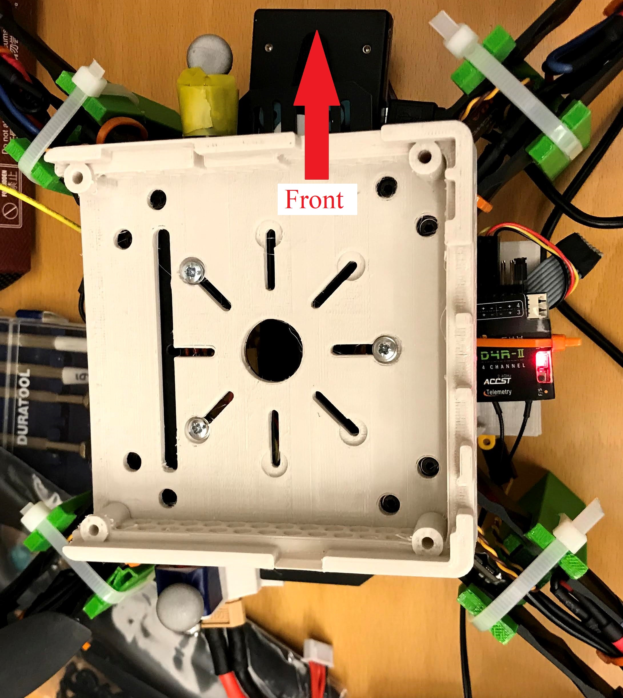

Peripherals Assembly
The "peripherals" encompass the components that go beyond the scope of low level sensors and components required by the Pixhawk / PX4 flight stack for flight. This includes:
- Companion computers for additional onboard processing
- Lidar sensors used for SLAM
- Cameras used for Computer Vision and/or SLAM

Required Parts
- 1x Intel® NUC 8 Pro Board - NUC8v7PNB
- 1x DC-DC 10-32V To 12-35V 150W Boost Converter
- 1x RealSense L515 Lidar Camera
- 2x RealSense D435i Stereo Cameras
--
- 2x preassembled landing gear assembly (w/ camera mount)
- 1x 3D printed NUC Mount Assembly
- 1x 3D printed L515 Camera mount
- 1x 3D printed Boost Converter Mount
--
- 3x 0.25" Camera Screws
- 4x M3 x 12mm screws (w/ nuts)
- 3x M3 x 10mm screws (w/ washers & nuts)
- 4x M3 x 32mm screws (w/ nuts)
- 1x Cable with barrel jack (~5 cm loose wire)
- 2x wires ~ 10 cm long
- 4x 2mm Bullet (Banana) connectors (male)
- 1x USB-C to USB-C Cable
- 2x USB-C to USB Cable
Procedure
Before starting, please follow instructions for Landing Gear Assembly.
The D435i stereo cameras are mounted onto two of the landing gear legs [Main Leg (With camera mount)],
so these should be attached to the drone frame prior to connecting the peripherals.
3D Printing
Assembling the landing gear first requires printing all necessary components, detailed in the table below:
| Component Name | Quantity | Recommended Orientation |
|---|---|---|
| NUC Mount Top | 1 | Flat side down |
| NUC Mount Bottom | 1 | Flat side down |
| Boost Converter Mount | 1 | Flat side down |
| L515 Camera Mount | 1 | Camera face down |
CAD files can be found at NUC Mount Assembly , Boost Converter Mount, and L515 Camera Mount. The recommended orientations are selected primarily for ease of removing the breakaway support material.
For our implementation, the parts were printed with PLA material using the standard print settings (with breakaway support under bridges) of the Makerbot Replicator+ 3D printer. Printed component quality/durability could possibly be improved by the use of ABS material or by modifying print settings.
Boost Converter

The boost converter sits on top of the NUC. There are multiple mounting point options on the NUC for the boost converter mount. This flexibility is so the weight distribution can be changed AND to offer a spot for mounting a Nvidia TX2 on top of the NUC for additional computing / image processing capabilities. See TX2 Note below.
It is strongly recommended (if not mandatory) to mount the boost converter to the furthest back mounting point (as seen above) as it is helpful in offsetting the weight imbalance caused by all three RealSense cameras being mounted so far forwards. The only reason to choose a different mounting point is if you end up incorporating a TX2 in your assembly, in which case the TX2 should be at the back and the boost converter would be at the front.
Steps
- Set the boost converter in the mount with the wire ports towards the open side
- Note that the open side of the NUC mount sits on the drone's left hand side. See NUC Assembly below.
- Line up the boost converter with the furthest back set of mounting holes, such that the wire ports face towards the open (left) side of the NUC mount.
- Insert a nut into each of the 4 corresponding nut slots in the underside of the NUC mount top
- Use four M3 x 12mm screws to secure the boost converter from its top side,
through the boost converter mount, through the NUC mount top, and secured
into the nut slot on the underside of the NUC mount top.
- Make sure the screws are not hitting the top of the NUC when the mount is set on it. If they are, use shorter screws
- The NUC is powered by a barrel jack coming straight out of the boost converter
- You need ~ 5cm from the barrel jack to the loose wire ends that are fed into the boost converter. This could need to be longer if you are including a TX2, as mentioned above.
- It is convenient to have 2mm male bullet (banana) connectors on the loose wire ends for a better connection into all the boost converter ports (power-in from hot swap board as well)
- Insert the power-in cables (the two ~10 cm wires) to the correct ports and feed the wires
through the NUC mount top, so they will come out at the front near
the hot swap board, as seen above
- We found it convenient to split the wire with 2mm bullet connectors near where they are thread through the NUC mount, so it is easier to disconnect them from the hot swap board. This isn't necessary, but could be nice.
You should now have the boost converter secured to the top of the NUC mount and can treat them as one component while mounting the NUC.
NUC
Bottom Mount
- Mount the NUC mount bottom to the top plate of the Q380 drone frame, with the
open side of the mount pointed to the left hand side of the drone, using the
M3 x 10mm screws, with a washer under the head and a nut under the Q380 top plate.
- This is easier done without the top plate mounted to the rest of the frame, but can be done with the top plate already mounted.
- The three screw locations seen below are the locations you must use. Using other screw hole locations will cause the bottom of the screw and the nut to interfere with sliding the battery into place.

MoCap Marker Installation
We found it convenient to use the hexagonal holes printed into th NUC mount as motion capture (MoCap) marker installation points. If you would like to do this as well, install these markers before securing the NUC to the bottom and top NUC mount components.
When mounting the marker balls, consider:
- The "rigid body" the markers form should not be symmetric in any way. This could cause orientation ambiguity in the MoCap's estimate of the drone's 6 DOF position.
- The markers should be visible from as many directions at a time as possible
- It is easy to distribute the markers in the X & Y axes, but make sure the markers span multiple planes in the Z axis (vertically) as well.
Securing the NUC
- Optional: Secure the NUC's ground wire tabs to the bottom of the fan so they will fit into the long groove cut into the NUC mount bottom. This can be done with a small piece of tape.
- Set the NUC on top of the bottom mount, with the fan exhaust pointed towards the open side of the mount and the ground wire tabs in their groove. There are channels in the NUC mount where the ground wires can be run.
- Set the NUC top mount (with boost converter attached) on top of the NUC, lining up the open side of the mount on the top and bottom components.
- One corner at a time, push a nut into the nut slot in the underside of the NUC mount bottom and drop a M3 x 32mm screw into the corresponding hole in the NUC mount top. Tighten the screw until it grips the nut so it won't come loose, but do not crank it tight yet.
- Once all four corners are secured, gently tighten them a little at a time. Do not over tighten, as you could crack the 3D printed NUC mount.
RealSense Cameras
L515 Lidar Camera
The L515 camera slips into the 3D printed mount, facing out and with the screw hole in the bottom lining up with the hole in the bottom of the mount. You should use one of the 1/4 inch camera screws to ensure the camera is held in place.
The back end of the mount then slips over the part sticking out on the bottom plate, facing towards the front. This slip is a very snug fit, so be careful when installing the mount to not snap the frame or the 3D printed mount. It helps to wiggle the mount back and forth to slide it on, BUT DO NOT WIGGLE IT UP AND DOWN as it is more likely to break one of the components this way.
D435i Stereo Cameras
The stereo cameras sit on top of the platforms of the two landing gear legs with the platforms. These should be the two legs in the front of the drone. If they aren't, switch the legs around so the cameras will face towards the front, both at a 45 degree angle from thr L515 camera.
Sit the camera on the platform and secure both of them with one of the 1/4 inch camera screws. Make sure the screw is tight and that the back of camera is parallel to the closest face of leg it is mounted on. There is a small gap, which gives the camera some play, but it should be parallel so it matches the ROS static transforms necessary for the SLAM applications these cameras will be used in.
Cables
All three RealSense cameras have USB-C ports for connecting to the NUC. The NUC only has one USB-C port and many standard USB ports. Choose the USB-C -> USB-C & USB-C -> USB cable connections that make the most sense (you will configure which camera corresponds to which port later) and use zip ties as necessary to hold the cables away from the propellers.
TX2 Note
Originally, we had intended to include a Nvidia TX2, in addition to the NUC, for additional computing / image processing capabilities. We did not end up mounting a TX2, but it should be fairly straightforward to design a mount for a TX2 on a J120 board. We have holes in the top of the NUC mount matching the footprint of the J120 board and designed an example mount similar to the boost converter mount (TX2 Mount Prototype), but never printed and mounted the TX2 so we cannot guarantee it will fit. As you can see below, it should fit when mounted in the same way as the boost converter mount.
Also, power supply from the boost converter should be sufficient for both the NUC and the TX2 simultaneously, but this was not verified with a test.